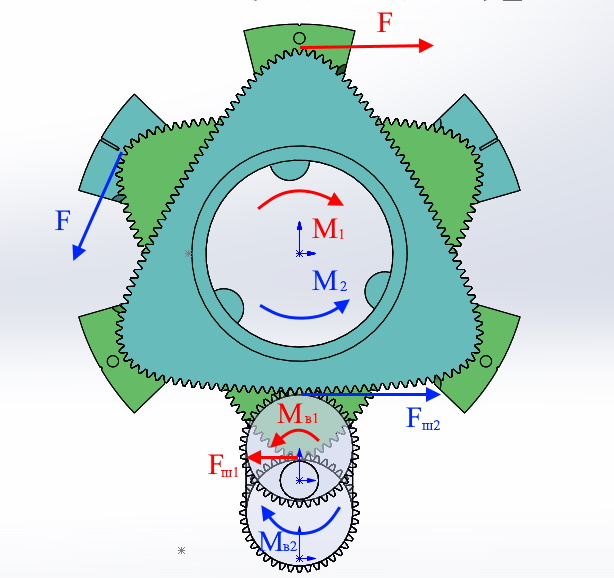
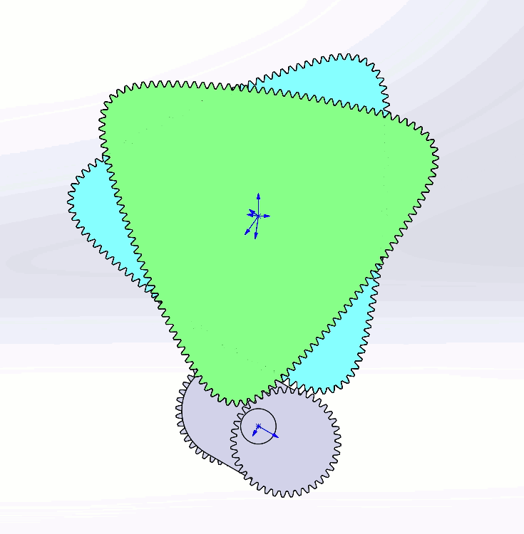

В конструкции двигателей применен вал со смещенными относительно центра вала шестернями. Смещенные шестерни позволяют приложить усилие с разным плечом и создать тем самым разные по величине моменты силы относительно центра вала. Вал соединен с двумя цилиндрами через зубчатые передачи. Лопасти и стенки цилиндров образуют замкнутые камеры. Давление на лопасти цилиндров одинаковое в обоих направлениях. Но к шестерням вала прилагаются разные усилия так как расстояния от оси цилиндров до точек контакта зубчатых зацеплений разные. Вследствие этого на шестерни вала действуют разные сили в противоположных направлениях. Кроме того, усилия прилагаются к валу сразным плечом так как расстояния от точек контакта зубчатых зацеплений до центра вала так же разные. На валу появляются два противоположно направленных момента разные по величине. При этом оба цилиндра начинают проворачиваться в одном направлени (в сторону большего момента силы).

На картинке Mв2 больше Mв1, а сили F одинаковы. Благодаря этому вся система приходит во вращение.
При равномерном врещении вала контактирующие с ним шестерни будут вращаться в одном направлении с различными скоростями (поочереди ускоряясь и замедляясь)

Лопасти установленные в цилиндрах при этом поочередно сходятся и расходятся образуя камеры переменного объема. Такое движение соосно установленных роторов - общий принцип для двухроторных двигателей.

Вид двигателя в разрезе (двухтактный вариант)

Таким образом, у двигателя как бы нет выделенного "статора" и "ротора". Есть два ротора вращающихся с разными скоростями. Ротор имеющий меньшую скоростость в данынй момент является опорным - выполняет роль "статора". А ротор с большей скоростью - является ведущим и выполняет роль "ротора". Через 180 градусов поворота вала они меняются ролями.